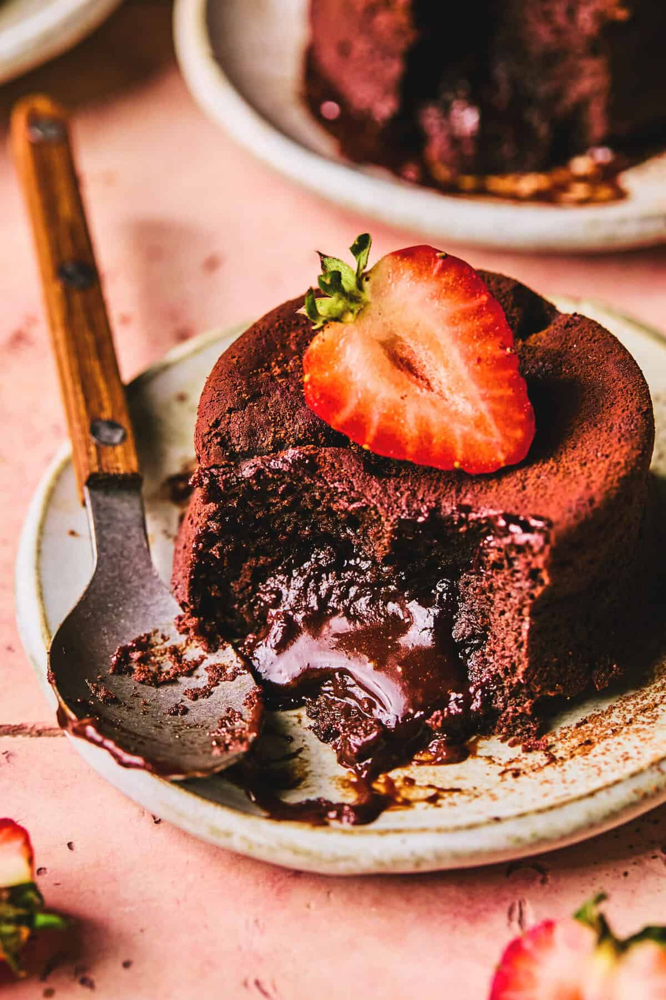
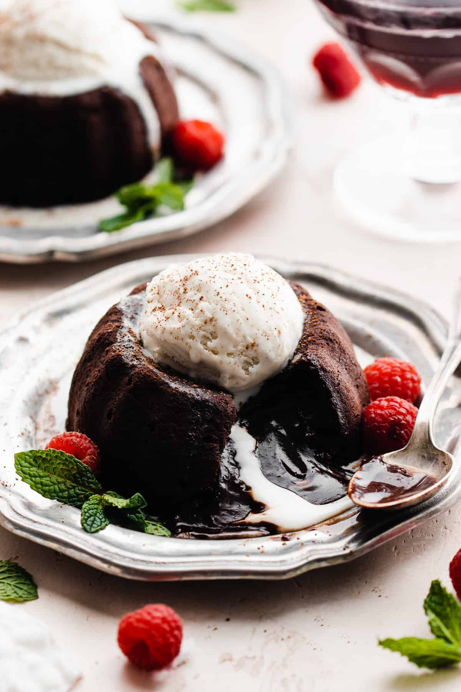
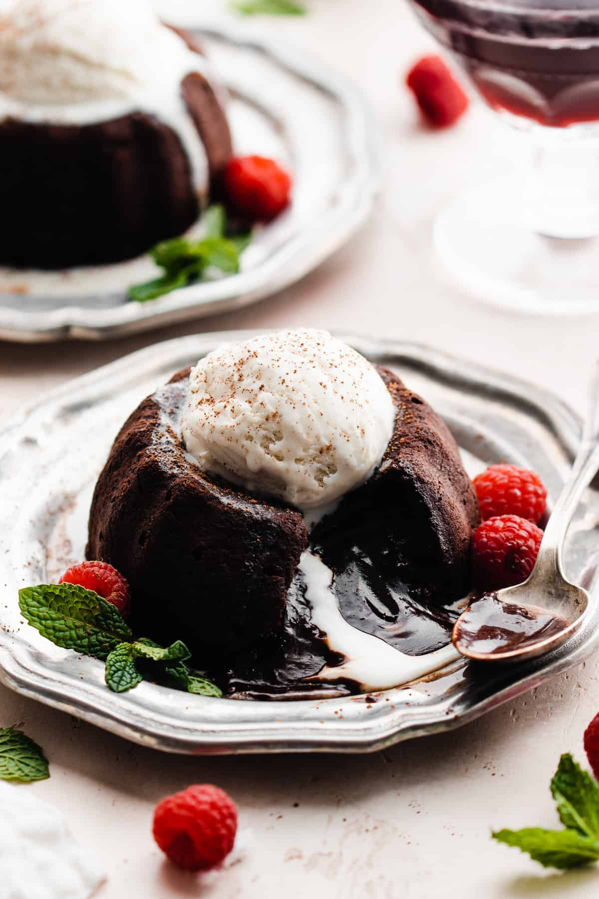

Home
Chocolate Lava Cake

 

Description
Indulge your sweet cravings with this rich, gooey, and irresistible Chocolate Lava Cake. With a warm molten center and a moist outer layer, it’s the perfect dessert for chocolate lovers.
Whether you're planning a romantic dinner or just treating yourself, this easy-to-make recipe will impress every time!
Ingredients (Serves 4)
For the Filling:
- 100g dark chocolate (70% cocoa or higher)
- 100g unsalted butter (plus extra for greasing)
- 2 whole eggs
- 2 egg yolks
- 1/4 cup (50g) granulated sugar
- 2 tbsp all-purpose flour
- 1 tsp vanilla extract
- Pinch of salt
Steps:
Step 1: Prep Your Ramekins
- Preheat your oven to 220°C (425°F).
- Grease four ramekins with butter and lightly dust with cocoa powder to prevent sticking.
Step 2: Melt Chocolate & Butter
- In a heatproof bowl, melt chocolate and butter together over a pot of simmering water (double boiler method) or microwave in 20-second intervals, stirring in between.
- Let the mixture cool slightly.
Step 3: Beat Eggs & Sugar
- In a separate bowl, whisk together the whole eggs, egg yolks, and sugar until light and fluffy (about 2-3 minutes).
Step 4: Combine & Fold
- Gently fold the melted chocolate mixture into the egg mixture.
- Add vanilla extract, salt, and flour. Fold until just combined. Do not overmix.
Step 5: Fill & Bake
- Pour the batter evenly into the ramekins.
- Bake for 11–12 minutes until the edges are set but the center is still soft. Don’t overbake—you want that molten core!
Step 6: Serve
- Let rest for 1 minute, then gently run a knife around the edges and invert onto serving plates.
- Serve immediately with vanilla ice cream, whipped cream, or fresh berries.
Tips for Perfect Lava Cakes
- Use high-quality chocolate for the richest flavor.
- Chill the batter for 30 minutes if you want to prepare ahead of time.
- Do not overbake! The center should be gooey.